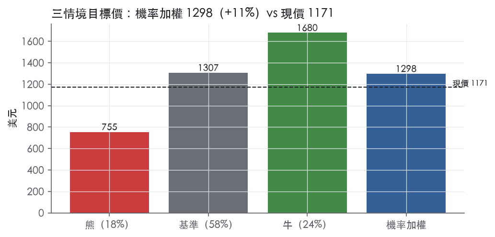
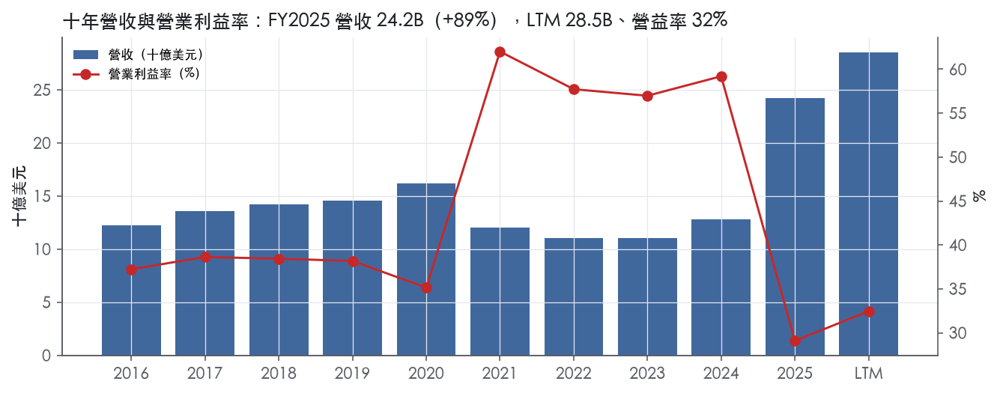
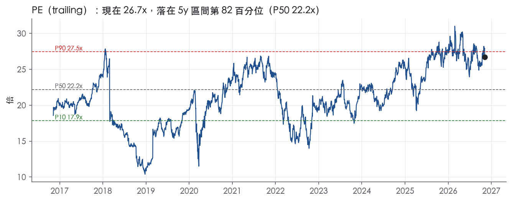
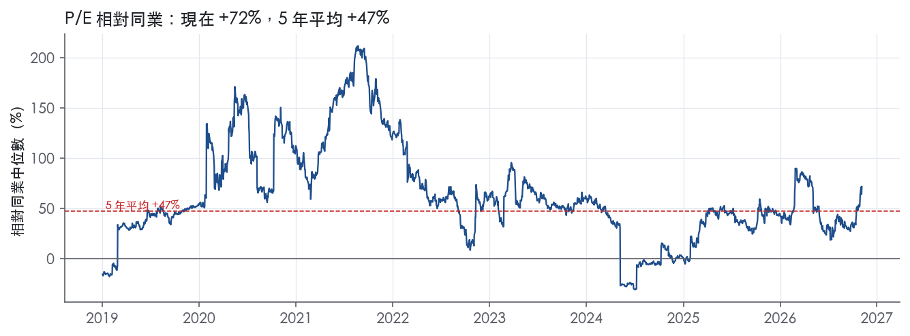
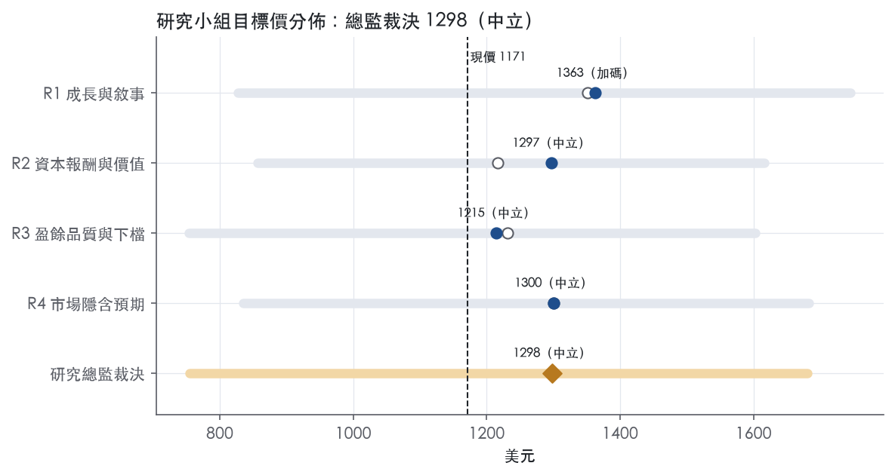
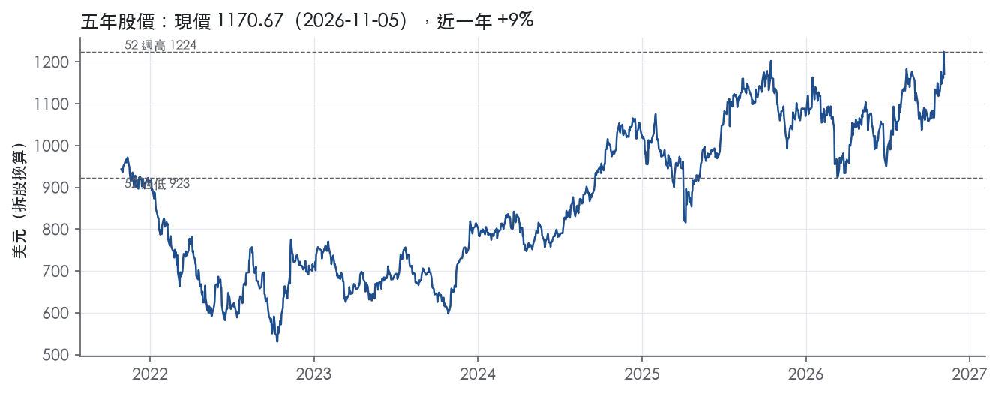

評等總表 › 金融 › BLK
有機成長已在價內，倍數持平21x，中性｜評等 中立｜目標價 1298
| 報告日 | 評等 | 目標價 | 當時股價 | 超額報酬 |
|---|---|---|---|---|
| 2026-11-05 | 中立 | 1,298 | 1,171 | +2.9% |
| 2026-10-09 | 加碼 | 1,241 | 1,082 | +6.5% |
| 快評 | 動作 | 結論 |
|---|---|---|
| 2026-10-14 | 維持 | GAAP盈餘低於我們預測，維持加碼 |
| 評等 | 中立（邊界，鄰近加碼） |
| 12 個月目標價 | 1298 美元 |
| 現價 | 1170.67 美元（2026-11-05） |
| 預期報酬 | 股價 +10.9%＋股息 1.9%＝總報酬 +12.8%；同業籃門檻 9.9%，超額 +2.9% |
| 估值方法 | P/E 21.0x，套在第 5–8 季的EPS（也就是一年後的未來四季） |
| 三情境 | 熊 755／基準 1307／牛 1680 |
| 研究流程 | 四位研究員兩輪辯論＋研究總監裁決 |
| 資料來源 | SEC EDGAR XBRL、Tiingo、FRED（全免費） |
有機成長已在價內，倍數持平21x，中性（研究總監裁決，四位研究員兩輪辯論後）
評等 中立（邊界，鄰近加碼）｜12 個月目標價 1298 美元（總監三情境機率加權 1297 與研究員中位數 1299 各半）｜現價 1170.67（2026-11-05）
預期報酬：股價 +10.9%＋股息 1.9%＝總報酬 +12.8%。同業籃門檻 9.9%，超額 +2.9%，離加碼的分界不到三個百分點，屬邊界評等（落在其他級距的機率約三成）。
估值方法：P/E 21.0x，套在第 5–8 季的EPS（也就是一年後的未來四季）。三情境：熊 755（18%）／基準 1307（58%）／牛 1680（24%）。
什麼會讓研究總監改變看法：單季年化有機基礎費成長連兩季低於 5% 或技術 ACV 成長跌破 10%，y2 降到 6%、倍數回 P50 18.7x 並轉空；FY2026 ROIC達 13% 以上且 GAAP 營益率連兩季站上 35%，倍數上移到 P75 23.1x 並轉多。
| 過去四季（實際，FY2026Q3） | 未來四季 | 第 5–8 季 | 第 9–12 季 | |
|---|---|---|---|---|
| 營收（B） | 28.5B | 32.8B | 35.8B | 38.3B |
| 營收成長 | 86.9% | 15.0% | 9.0% | 7.0% |
| 營業利益率 | 32.5% | 34.0% | 34.5% | 34.5% |
| EPS（美元） | 43.83 | 56.00 | 62.25 | 66.94 |
| EPS 成長 | 11.6% | 27.8% | 11.2% | 7.5% |
| 每股股息（美元） | 22.40 | 22.40 | 22.40 | 22.40 |
| P/E（現價） | 26.7x | 20.9x | 18.8x | 17.5x |
| 股息殖利率（現價） | 1.9% | 1.9% | 1.9% | 1.9% |
過去四季為申報數字；預測為研究總監的假設、程式計算。倍數與殖利率都用現價計算，用來看現價對應各期獲利的高低。
| 項目 | 上次（2026-10-12） | 這次（2026-11-06） | 變動 |
|---|---|---|---|
| 評等 | 加碼 | 中立 | 變動 |
| 機率加權目標價（美元） | 1,241 | 1,298 | +4.6% |
| 超額報酬 | 6.5% | 2.9% | -3.6 pp |
| 目標倍數 | 21x | 21x | — |
| 未來四季營收成長 | 11.0% | 15.0% | +4.0 pp |
| 未來四季營益率 | 35.0% | 34.0% | -1.0 pp |
| 未來四季 EPS（美元） | 53.99 | 56.00 | +3.7% |
| 熊／基準／牛機率 | 15／57／28 | 18／58／24 | — |
程式計算；「未來四季」各自從當次報告的資料起點算。研究總監逐點說明見第八章「與上次報告比較」。
| 情境 | 機率（歷史） | 故事 | 未來四季營收成長 | 第 5–8 季營益率 | 倍數 | 目標價 | 股價漲跌 |
|---|---|---|---|---|---|---|---|
| 熊 | 18%（14%） | 本行下行路徑（GDP 0.3、Baa 2.30）股市回檔壓費基、表現費歸零、私募信貸估值下修，營益率比照 2022 降幅並含或有對價縮小緩衝；對應風險表第 1 條（市場下跌侵蝕 AUM 與基礎費）與第 3 條（HPS／私募信貸） | -4.0% | 31.5% | 17.0x | 755 | -35.5% |
| 基準 | 58%（62%） | 有機基礎費從 10–11% 回落到 7–9%，表現費、營業外收益與市場 beta 不外推，FY2025Q4 低點滾出使 GAAP 營益率修復到 34–34.5%，股數小幅淨減，倍數持平 | 15.0% | 34.5% | 21.0x | 1307 | 11.7% |
| 牛 | 24%（24%） | 本行上行路徑（2 年債 4.30）股市 beta 回來，有機基礎費維持雙位數，私募募資與 AI 基建部署加速，倍數到前瞻帶 P75 附近 | 19.0% | 36.5% | 24.0x | 1680 | 43.5% |
目標價由程式依研究總監的驅動與倍數計算；機率由研究總監給定。括號內是歷史頻率：把這檔股票過去十年 12 個月報酬的波動形狀，置中在基準情境，結果落在各情境附近的比例。

四位研究員用不同方法各自估值，回應研究總監的質疑後交出第二輪，最後由總監逐點裁決。各研究員的主張見第七章，裁決理由見第八章，完整論證見《研究底稿》。
| 立場（一輪→二輪） | 加權目標價（一輪→二輪） | 評等（一輪→二輪） | 第二輪倍數 | 熊～牛目標價 | |
|---|---|---|---|---|---|
| R1 成長與敘事 | 中性→看多 | 1351→1363 | 加碼→加碼 | 22.0x | 827～1745 |
| R2 資本報酬與價值 | 中性→中性 | 1217→1297 | 中立→中立 | 24.0x | 856～1616 |
| R3 盈餘品質與下檔 | 中性→中性 | 1232→1215 | 中立→中立 | 20.0x | 754～1602 |
| R4 市場隱含預期 | 中性→中性 | 1300→1300 | 中立→中立 | 21.0x | 835～1683 |
| 研究總監裁決 | 中性 | 1298 | 中立 | 21.0x | 755～1680 |
目標價由程式依各自的驅動與倍數計算；評等＝機率加權總報酬 − 同業籃門檻。
BlackRock是一家以規模取勝的全球投資管理公司，橫跨主動、指數、私募市場與現金管理四大策略，並疊加Aladdin技術服務這第二引擎。公司是一家擁有14.0兆美元資產管理規模（AUM）的領先上市投資管理公司，截至2025年12月31日，在逾30個國家擁有約24,900名員工，服務逾100個國家的客戶¹。公司提供多元的投資管理及技術與訂閱服務，產品涵蓋股票、固定收益、私募市場、流動性另類投資、數位資產、貨幣與商品及貨幣市場工具的單一及多元資產組合¹。公司以信託人身份管理客戶資產，不從事可能與客戶利益衝突的自有交易¹。客戶包括免稅機構（如確定給付與確定提撥退休計畫、慈善機構、基金會與捐贈基金）、官方機構（如央行、主權財富基金）及應稅機構（保險公司、金融機構、企業及第三方基金發起人）¹。公司是獨立上市公司，無單一多數股東，董事會逾80%為獨立董事¹。
BlackRock的收入結構分兩大塊：投資管理費（基於AUM的基礎費）加表現費，以及快速成長的技術服務與訂閱收入。依產品類型看，股票AUM年底達7.79B美元（原文單位為百萬，即7,793,875M美元）¹；固定收益AUM為3.27B（即3,272,021M美元），占長期AUM 25%、占長期基礎費及證券借貸收入22%¹；多元資產AUM為1.22B（即1,223,625M美元），占長期AUM 9%、占長期基礎費收入8%¹。另類投資（含私募市場與流動性另類）AUM合計423,614M美元，占長期AUM 3%，但占長期基礎費及證券借貸收入高達17%，顯示費率明顯高於平均¹。其中私募市場細分為基礎設施112,116M美元、私募信貸145,385M美元（受HPS交易貢獻118B）、私募股權30,623M美元、不動產25,062M美元¹。ETF業務是公司最大單一引擎，年底iShares ETF AUM達5.5兆美元規模級別（原文為5,467,710M美元）¹，占長期AUM 42%、占長期基礎費及證券借貸收入45%¹。現金管理AUM為1,080,732M美元¹。技術服務與訂閱（Aladdin、eFront、Aladdin Wealth、Preqin、Cachematrix）2025年收入2.0B美元，年增24%，年度合約價值（ACV）年增31%（含Preqin）、不含Preqin則增16%¹。這塊雖占總營收比重小，但屬高毛利、經常性收入業務，是公司估值溢價的關鍵敘事。
按地區，Americas占總AUM 68%、占總基礎費及證券借貸收入67%；EMEA占25%、28%；Asia-Pacific占7%、5%¹。按客戶類型，零售占長期AUM 10%、占長期基礎費及證券借貸收入25%；機構主動占19%、24%；機構指數占29%、6%——指數業務規模大但費率低，是公司刻意經營的低利潤導流產品。退休金、基金會與捐贈基金是機構客戶最大來源，公司是全球最大退休金資產管理者之一，年底管理3.9兆美元（占長期機構AUM 62%）的確定給付、確定提撥及其他退休金計畫資產，其中確定提撥渠道占退休金總AUM的2.1兆美元¹。保險公司占長期機構AUM 12%（720B美元），其他應稅機構（企業、銀行、第三方基金發起人之子顧問業務）占19%（1.2兆美元），官方機構占5%（348B美元）¹。通路上，零售投資者主要透過中介機構（券商、銀行、信託公司、保險公司、獨立財務顧問）服務，ETF則在交易所上市，終端投資者透明度有限¹。
過去四季AUM從約12.5兆美元加速衝上15.5兆美元，淨流入規模與基礎費成長率同步走高，顯示有機成長動能持續擴大。2025Q4營收7.01B美元，年增-462.0%（因基期含負值，數字失真）（is/dv相關 fact: FY2025Q4營收7.01B）。2026Q1營收6.70B美元，年增27.0%，營益率回升至42.0%。2026Q2，公司申報營收7,084M美元，較去年同期5,423M美元增31%；GAAP營業利益2,461M美元，增42%；GAAP營業利益率34.7%（去年同期31.9%）；GAAP淨利1,914M美元，增20%；稀釋EPS 12.19美元，增20%；調整後稀釋EPS 13.91美元，增15%；當季回購普通股4.5億美元，並將計劃中的季度回購規模提高至5.5億美元²。上半年淨流入達創紀錄的321B美元，其中第二季192B美元，廣泛分布於ETF、私募市場、主動固定收益與系統化股票策略²。2026Q3，公司申報營收7,752M美元，較去年同期6,509M美元增19%；GAAP營業利益2,328M美元，增19%，營業利益率30.0%（與去年同期持平）；GAAP淨利1,659M美元，增25%；稀釋EPS 10.57美元，增25%；調整後稀釋EPS 15.93美元，增38%，主要反映本季較高的非營業收入；公司完成5.5億美元股票回購³。該季AUM達15.5兆美元規模（原文15,488,263M美元），過去十二個月淨流入869B美元，有機基礎費成長率10%；單季淨流入205B美元，年化有機基礎費成長率11%，廣泛來自iShares ETF、系統化主動股票、私募市場與現金³。技術服務與訂閱收入年增14%，主要受Aladdin與多產品解決方案動能帶動³。
管理層認為差異化競爭優勢來自客戶選擇模式（提供指數、主動、私募市場及整體投資組合解決方案）、強勁的投資績效、以研究數據分析為核心的投資流程、全球布局（約60%員工在美國以外、約35%總AUM為非美國客戶管理）、差異化客戶關係與信託焦點，以及對創新與技術服務的長期承諾¹。公司特別點名ETF的結構性轉移、私募市場（基礎設施、私募信貸）配置增加、整體投資組合外包需求、固定收益再配置預期、對高表現主動策略的需求，以及退休與收入主題，作為行業趨勢中的機會¹。公司CEO Laurence Fink在2026年第三季財報中表示，BlackRock正同時扮演領先的公開市場管理者、規模化私募市場平台與全球科技公司三重角色，平台的質與廣度正在與客戶建立更深的連結，驅動更高、更持久的有機成長與股東回報³。公司並指出AI基礎設施夥伴關係（AI Infrastructure Partnership）在本季完成首筆部署，過去十二個月於私募市場募得68B美元，顯示其在大型資本結構化與配置中的中心地位正在擴大³。整體而言，BlackRock的敘事是「規模×多元產品×技術」三位一體，ETF與私募信貸（尤其HPS併購後）是近期流量貢獻最大的兩塊，Aladdin則是估值溢價與客戶黏著度的來源。機構指數業務雖規模最大，但費率結構明顯偏低，公司成長敘事的重心已清楚轉向另類與技術服務。觀察未來四季表現，有機基礎費成長率與調整後營業利益率的邊際變化，將是驗證「整合平台」溢價能否持續兌現的關鍵指標。

BlackRock 評為窄護城河、趨勢穩定。營運層面的規模、品牌與系統嵌入優勢完整，但近兩筆以股權支付的大型併購把資本報酬稀釋到只略高於資本成本，我們沒有把握它在未來 10 年都維持在資本成本之上。本評級從「寬」下修，下修的理由是資本報酬數字，競爭格局本身沒有惡化。
成本優勢是主軸，其次是品牌型無形資產與轉換成本。
成本優勢：BlackRock 在全球投資、風險與技術平台上發揮規模效益，同時靠在地通路服務客戶¹。機構非 ETF 指數委託通常規模很大（數十億美元級），費率也普遍很低¹。機構指數占長期 AUM 29%，只占長期基礎費及證券借貸收入 6%¹。在這種費率下仍能承接並獲利，本身就是規模成本優勢的證據，中小型管理人無法以同樣價格接單。
無形資產（品牌）：BlackRock 是全球領先的 ETF 供應商，年底 iShares ETF AUM 為 5,467,710M 美元，2025 年 ETF 淨流入 527B 美元¹。ETF 占長期 AUM 42%，占長期基礎費及證券借貸收入 45%¹。iShares 提供投資人快速、具成本效益地調整部位所需的流動性¹。指數產品近乎同質，iShares 仍能拿到最大流量，靠的是品牌信任和規模帶來的流動性，後進者難以用降價複製。
轉換成本：公司向機構投資人與財富管理中介提供專有的 Aladdin 投資系統，以及風險管理、外包等服務¹。在信託管理業務中，BlackRock 常擔任客戶的外部投資長，需要與客戶投資人員及受託人密切合作¹。目標日期與目標風險產品的 AUM 中，確定提撥計畫占 81%¹。系統嵌入、外部投資長委任與 DC 計畫的預設選項都讓客戶更換供應商時必須重建流程與治理，轉換成本高。
利潤率支持寬護城河，資本報酬只支持窄護城河，評級取兩者中較保守的一方。
支持面：量化底稿顯示，ROE 有資料的 9 年中，9 年都高於資本成本 9.9%；十年平均 14.1%，高出資本成本 4.2%，標準差僅 1.5%。
衝突一，資本報酬下滑：ROE 最新值 10.7% 是十年最低，十年最高為 16.3%。資料包 ROIC 從 FY2017 的 17.2% 降到 FY2025 的 10.5%，對 9.9% 的資本成本只剩很薄的緩衝。GIP 交易於 2024 年 10 月完成，HPS 交易於 2025 年 7 月完成，HPS 幾乎全部對價以 Subco Units 支付¹。股權支付的併購擴大了投入資本基礎，報酬率被稀釋屬於結構性結果，不代表本業競爭力下滑。資本成本代理值也被 4.9% 的 10 年債殖利率墊高，進一步壓縮了利差。
衝突二，利潤率波動被高估：量化底稿的稅前利益率標準差為 11.6%、最高 62.0%，數字看似不穩，實際上是資料包營收口徑斷層造成。資料包 FY2021 營收為 12.01B、營益率 62.0%，10-K 同年總營收則為 19,374M 美元、營益率 38.5%¹。10-K 揭露的 GAAP 營益率，2021 至 2025 年依序為 38.5%、35.7%、35.1%、37.1%、29.1%；調整後營益率依序為 46.8%、42.8%、41.7%、44.5%、44.1%¹。調整後營益率在 2022 年市場下跌期間仍守在窄幅區間，穩定度符合寬護城河的特徵。2025 年 GAAP 與調整後營益率的落差擴大，時點與 HPS 併購吻合。
最大的侵蝕來源是併購後資本報酬無法回升，其次是費率結構往低價產品遷移。
目標倍數應相對同業給予溢價，但溢價不應再擴大，因為利潤率穩定和品牌規模支持溢價，資本報酬的緩衝卻已經變薄。目前 trailing P/E 為 26.7x，位於自身 5 年分位 81.7%，接近 5 年 P90 的 27.5x，5 年中位數為 22.2x。建議以 5 年中位數附近作為倍數錨點；若後續財年 ROIC 回升、與資本成本重新拉開差距，再上修為寬護城河並提高倍數。
| 指標 | 最新 | 十年平均 | 標準差 | 最低 | 最高 |
|---|---|---|---|---|---|
| ROIC | 10.5% | 14.1% | 1.8% | 10.5% | 17.2% |
| 營業利益率 | 29.1% | 45.3% | 11.6% | 29.1% | 62.0% |
| FCF 利潤率 | 14.7% | 27.0% | 9.2% | 14.7% | 40.0% |
| ROE | 10.7% | 14.1% | 1.5% | 10.7% | 16.3% |
程式計算。資本成本代理值（10 年債＋5%）：9.9%；ROIC 平均減資本成本：4.2%；ROIC 有資料的 9 年中，高於資本成本 9 年。
BlackRock的FCF長期低於淨利，十年年度表顯示FY2016至FY2023每一年FCF都小於當期淨利（例如FY2024 FCF 4.70B對淨利6.37B、FY2025 FCF 3.55B對淨利5.55B）。加上程式標出的三條紅旗中，FY2020→2021淨利率跳升19個百分點、同期營收卻衰退25.9%，這個組合在本次拿到的10-K Item 7節錄與新聞稿中都沒有對應解釋文字。另外兩條紅旗（FY2016→17、FY2024→25）可以用資料包其他線索合理解釋，但其中一條缺乏原文佐證、另一條現金體質的結構性落差，依規則判定為低品質，估值端應對盈餘打較大折扣。
現金沒有穩定跟上盈餘，FCF相對淨利的落差在十年窗口內幾乎從未收斂。年度表顯示FY2019 FCF 2.63B對淨利4.48B、FY2021 FCF 4.60B對淨利5.90B、FY2023 FCF 3.82B對淨利5.50B，差距方向一致。季度層面也看到規律的現金流季節性缺口：FY2025Q1 CFO為-1.13B、FY2026Q1 CFO為-0.98B，兩年同期都轉負，和年度獎金、遞延獎勵發放的時序有關，屬於可預期的季節性波動而非惡化訊號。LTM FCF為4.78B，相對LTM EBITDA 9.96B，轉換率遠低於毛利指標暗示的獲利能力，這在資產管理業常見，因為SBC與獎金遞延會侵蝕現金但不進入EBITDA口徑。整體而言，現金體質「方向穩定但長期跟不上」，不是短期一次性問題，而是這個商業模式的常態特徵，但仍符合計分表「低品質」判準中的現金落差條件。
Q3 2026新聞稿揭示GAAP稀釋EPS為10.57美元、調整後為15.93美元，兩者差距達5.36美元，相當可觀³。GAAP營業利益2,328M美元、調整後營業利益3,330M美元；GAAP淨利1,659M美元、調整後淨利2,621M美元³。公司明確說明「19% increase in year-over-year GAAP operating income and 25% increase in GAAP diluted EPS impacted by a noncash change in fair value of contingent consideration associated with prior acquisitions, which has been excluded from as adjusted results」³。換言之，GAAP與調整後數字之間最大的單一調整項是先前併購（HPS、GIP、Preqin等）的或有對價公允價值變動，這項雖是非現金，但反映的是公司對賣方真實的或有付款承諾，調整後指標把它整個剔除，等同假設這項負債永遠不會真正發生，這個假設不穩健。另外新聞稿也點出「38% increase in year-over-year as adjusted diluted EPS also reflects higher nonoperating income in the current quarter」³，非營業投資收益波動大，不是核心資產管理業務的重複性盈餘，估值時應該被排除在核心乘數之外。結論：或有對價公允值變動是真實成本（應打折回加），nonoperating income是非核心波動項（應排除），兩者都不支持直接用調整後EPS 15.93美元做估值基準。
槓桿極輕，淨負債為-0.14B，等於淨現金狀態，不構成估值倍數的限制因素。最近一季總債務12.74B對現金12.88B（FY2026Q3季度表），兩者幾乎相抵。年度表顯示淨負債從FY2024的-0.45B轉為FY2025的1.30B，方向上出現小幅舉債，時間點和同年完成的HPS Transaction（2025年7月，增加118B計費AUM、165B客戶AUM）與Preqin併購（2025年3月，現金對價約3.2B）吻合⁴，屬於併購驅動的一次性舉債，而非經營面槓桿擴張。資本回饋方面，（股利＋回購）／淨利的三年均值84.2%、十年均值84.5%，兩者都遠高於50%的綠燈門檻，顯示公司長期把絕大部分淨利還給股東。稀釋股數年變動LTM為-0.1%，代表淨回購持續減少在外股數，資本配置紀律良好，沒有用股權稀釋掩蓋盈餘品質問題。SBC／營收LTM為4.7%，略低於三年均值5.7%但略高於十年均值4.9%，落在黃燈區而非紅燈，反映近年併購後整合人才與留才成本墊高，但尚未惡化到結構性問題的程度。
紅旗一：淨利率FY2016→2017跳升11個百分點。 本次資料包沒有附上2016–2017年的10-K或新聞稿原文，無法直接驗證成因。觀察年度表，同期EPS由19.02美元跳升到30.12美元、CFO與FCF同步放大（年度表數字），顯示利潤率改善伴隨現金流同步增長，較像是市場回暖推升業績費與資產管理規模的真實營運改善，而非單純會計調整，但這個判斷缺乏原文佐證，estimate端應知悉這是推論而非確認【判，未完全解釋】。
紅旗二：淨利率FY2020→2021跳升19個百分點，同期營收卻衰退25.9%。 這是三條紅旗中最需要警惕的一條，因為「營收下滑、利潤率同時倍增」的組合，最常見的成因是申報口徑變動（例如分銷與服務費用從毛額改為淨額列示，使營收分母縮小但相應費用同步剔除，數學上推高利潤率而非真實獲利能力翻倍）。但本次拿到的10-K Item 7節錄只涵蓋2021–2025年的AUM細節，沒有觸及2020–2021年營收與費用列示方式變動的說明文字，因此這條紅旗目前沒有原文可以解釋，應列為未解決項目【判，未解釋紅旗】。
紅旗三：淨利率FY2024→2025下滑27個百分點，同期營收暴增89.3%。 這條可以用資料包提供的原文解釋：10-K MD&A明確說明HPS Transaction於2025年7月完成，增加165B客戶AUM、118B計費AUM，Preqin併購於2025年3月以約3.2B美元現金完成⁴；新聞稿進一步指出同期GAAP營業利益與EPS受「非現金或有對價公允值變動」拖累，且此項已從調整後指標剔除³。這組合說明FY2025的GAAP利潤率下滑主要來自併購整合費用、無形資產攤銷與或有對價公允值重估等非經常性/非現金項目，而非核心資產管理與科技服務業務本身惡化，屬於可解釋的紅旗。
估值應以GAAP與FCF為主要基準，對調整後EPS（15.93美元）打折，因為最大調整項（或有對價公允值變動）是真實的併購經濟負擔，不應全額加回，而nonoperating income驅動的額外漲幅也屬非核心波動。現金轉換長期低於1（FCF 4.78B對LTM）進一步支持用FCF而非GAAP或調整後淨利作為估值現金流的主要依據，兩條未完全解釋的紅旗（FY2016–17與FY2020–21的利潤率跳動）意味著估值員應對長期盈餘趨勢保守看待，不宜線性外推近年的利潤率擴張。槓桿極輕、淨負債接近零，不構成倍數的額外限制，目前P/E 26.7x已處於5年分位81.7%的高位，估值貴的部分來自成長與資本回饋的溢價，而非資本結構風險，但考慮到盈餘品質的折扣，目前倍數的安全邊際偏薄。
| 項目 | LTM | 近三年 | 十年 | 燈號 | 規則 |
|---|---|---|---|---|---|
| SBC／營收 | 4.7% | 5.7% | 4.9% | 黃 | ≤3.0% 綠、>8.0% 紅 |
| 稀釋股數年變動 | -0.1% | 1.9% | -0.4% | 綠 | ≤0.0% 綠、>3.0% 紅 |
| （股利＋回購）／淨利 | — | 84.2% | 84.5% | 綠 | ≥50.0% 綠、<0.0% 紅 |
程式計算；燈號以 LTM（無則近三年平均）判定。
| 風險 | 觸發指標（看什麼數字、在哪裡看） | 對 EPS 的影響方向與粗略幅度 | 未來 12 個月發生機率（高／中／低） | 出處 |
|---|---|---|---|---|
| 市場下跌侵蝕AUM與基礎費 | 季度AUM數字（8-K）、市場change欄位（10-K AUM component表）、ust10y/hy_oas（FRED） | 方向：負向，大；AUM中約57%為股票、ETF占長期AUM 42%，市場下跌直接拖累基礎費與EPS¹ | 高 | 10-K 年報 FY2025 Item 1（業務） |
| 單一大客戶贖回衝擊機構業務 | 機構淨流入/流出單季數字（8-K Business Results）、法人說明中提及的「single client」字眼 | 方向：負向，中；2025年機構指數淨流出119B美元主因單一客戶部分贖回，股票機構淨流出21B美元同樣因單一客戶轉換¹ | 中 | 10-K 年報 FY2025 Item 1（業務） |
| HPS／私募信貸整合與信用風險 | 私募信貸AUM淨流入/實現數字（8-K季報）、私募市場未提取承諾資金規模（10-K） | 方向：負向，中；私募信貸AUM達145,385M美元且當年由HPS交易貢獻118B美元，若信用循環轉差，私募信貸估值與管理費同步下修¹ | 中 | 10-K 年報 FY2025 Item 1（業務） |
| 費率結構持續下移（指數化、規模折價） | 長期基礎費年增率 vs. AUM年增率的落差（10-K/8-K對照）、ACV年增率（技術服務） | 方向：負向，中；機構指數占長期AUM 29%卻只占長期基礎費收入6%，顯示低費率資產占比持續擴大會壓縮整體有效費率¹ | 中 | 10-K 年報 FY2025 Item 1（業務） |
| 全球監管改革（MMF、OEF流動性規則、永續揭露） | 各國/SEC/FSB發布的規則變更日期、BlackRock MMF/OEF產品線淨流出數字 | 方向：負向，小至中；若宏觀審慎工具擴大適用於開放式基金或MMF流動性要求提高，可能限制產品供給或導致客戶改變配置¹ | 低 | 10-K 年報 FY2025 Item 1（業務） |
市場下跌侵蝕AUM與基礎費是五條裡影響幅度最大、也最容易被監測的風險。BlackRock的基礎費本質上是AUM的百分比，而AUM變動的最大單一分量是「市場change」，2025年全年市場變動為正2,882,720M美元（原文component表），顯示市場本身就是AUM變動的主導力量，遠超淨流入¹。股票AUM占總AUM最大宗（7,793,875M美元），且約半數股票AUM綁定國際市場策略（含新興市場），其費率高於美國股票策略，因此國際股市波動對公司股票營收與有效費率的影響更大¹。一旦股市出現兩位數跌幅，基礎費會同步下修，而公司成本結構中薪酬與技術投資偏固定，營業槓桿會反向放大EPS跌幅。監測方法：每季看AUM的「market change」欄位，以及ust10y、hy_oas走勢。
單一大客戶贖回衝擊機構業務排第二，因為10-K原文已三次提到「single client」造成的大額淨流出，顯示機構業務集中度風險是公司自己揭露的事實，不是分析師臆測¹。2025年機構指數業務因單一客戶部分贖回淨流出119B美元，機構股票主動也因單一客戶由量化股票轉指數策略淨流出21B美元，亞太區淨流出62B美元同樣「largely driven by the impact of a single client's partial redemption」¹。機構指數AUM規模雖大（3,696,174M美元），但費率低，單次大額贖回對營收的絕對金額衝擊可能有限，但對市場解讀「有機成長放緩」的敘事殺傷力大，容易觸發估值倍數壓縮。監測：每季8-K Business Results表中「By client type」淨流入數字，留意是否有大幅異常值。
HPS／私募信貸整合與信用風險排第三。2025年7月完成的HPS交易為私募信貸AUM貢獻118B美元，使私募信貸總AUM達145,385M美元，是另類投資中成長最快、費率最高的區塊，也是公司近年成長敘事的核心¹。私募信貸的風險在於：這類資產缺乏公開市場即時定價，一旦信用循環轉差，違約率上升，會透過管理費（基於AUM，若資產減損則AUM下修）與潛在表現費損失、客戶贖回壓力傳導至盈餘。另外，私募市場有約91,033M美元未提取承諾資金，尚未計入AUM，未來部署速度若因景氣轉弱而放緩，會延後費收成長的兌現¹。監測：每季私募信貸/私募市場淨流入與實現（realizations）數字、未提取承諾資金規模變化。
費率結構持續下移排第四。機構指數業務占長期AUM 29%，卻只貢獻長期基礎費及證券借貸收入的6%；相對地，另類投資僅占長期AUM 3%，卻貢獻17%的基礎費收入¹。這種結構性落差意味著，即使總AUM持續成長，如果成長的大部分來自低費率的指數與ETF業務（ETF占長期AUM 42%、占長期基礎費收入45%，費率雖高於純指數但仍低於主動與另類）¹，公司整體有效費率會逐步被稀釋，長期侵蝕營業利潤率。這不是單季事件，而是慢性風險，監測方式是每季比較「長期基礎費年增率」與「長期AUM年增率」是否持續背離（8-K/10-K揭露的base fee與AUM雙軌數字）。
全球監管改革排第五，影響幅度最小、機率最低，但仍值得列入監測清單，因為公司在10-K中花了大量篇幅描述MMF改革、OEF宏觀審慎政策與永續揭露規則的演變¹。例如英國與歐盟正考慮對MMF提高流動性要求，若新規要求提高流動性緩衝或強制流動性費用，可能壓縮MMF產品的收益率吸引力，進而影響公司1,080,732M美元的現金管理AUM規模¹。同樣，歐盟宏觀審慎政策若擴大適用於開放式基金的結構性要求，可能限制公司對特定客戶的產品供給能力¹。這類風險屬於尾部、低頻率事件，短期內不太可能實質衝擊EPS，但一旦落地會是結構性而非一次性的成本增加。監測：各國監管機構（SEC、FSB、歐盟）發布正式規則的日期與生效時間表。
被動/主動費率混合下的回購與股數稀釋速度，可能無法完全對沖EPS波動。公司近期加碼回購（Q2單季4.5億美元、Q3單季5.5億美元）³，試圖用股數減少撐住EPS成長，但若市場下跌導致AUM與CFO同步萎縮（參考FY2026Q1 CFO為-0.98B美元、FY2025Q1 CFO為-1.13B美元，顯示現金流本身就有季度性負值）（dv/cf相關 fact: cf.FY2026Q1、cf.FY2025Q1），公司能否維持同等回購力度值得懷疑，一旦回購縮手，EPS防禦力會同步消失。
Aladdin／技術服務的高估值敘事依賴持續雙位數ACV成長，一旦成長放緩，公司整體估值倍數（目前P/E 26.7x，位於5年分位81.7%）面臨較大修正風險。技術服務收入雖只占總營收一部分，但市場將其視為「軟體化、經常性收入」的估值錨，2025年ACV成長31%（含Preqin）、2026Q3技術ACV成長12%，成長率已明顯從高雙位數降至低雙位數（量化底稿：ACV年增率比較），若這條曲線繼續下滑，估值倍數的下修風險會比盈餘本身的下修更大。
現價 1170.67 對應 trailing（過去四季）P/E 26.7x、EV/EBITDA 18.2x、EV/EBITA —、EV/Sales 6.3x、FCF 殖利率 2.6%。主要估值倍數 P/E 現在 26.7x，落在5 年區間第 82 百分位（P10／P50／P90 = 17.9x／22.2x／27.5x）。

把程式的機械基準預測放到現價下，市場付的前瞻倍數是：P/E（未來四季） 17.7x、P/E（第 5–8 季） 14.2x。反推 DCF 顯示市價隱含未來五年營收年成長 8.9%（WACC 9.0%、終值成長 3.0%、FCF 利潤率 26.3%，SBC 不加回）。
| 倍數 | 現在 | 5 年 P10 | 5 年 P50 | 5 年 P90 | 現在分位 | 全期 P50 |
|---|---|---|---|---|---|---|
| P/E | 26.7x | 17.9x | 22.2x | 27.5x | 81.7% | 20.8x |
| EV/EBITDA | 19.3x | 13.7x | 18.5x | 22.3x | 63.9% | 17.3x |
| EV/EBITA | 19.5x | — | — | — | — | 16.1x |
| EV/EBIT | 20.8x | 14.2x | 19.2x | 23.8x | 67.0% | 17.1x |
| EV/Sales | 6.7x | 6.9x | 10.0x | 12.4x | 7.7% | 7.7x |
| P/S | 6.7x | 6.8x | 9.9x | 12.4x | 8.6% | 7.7x |
| P/FCF | 40.3x | 22.2x | 31.0x | 47.1x | 72.6% | 31.0x |
trailing 倍數（股價 ÷ 過去四季）；分位以每個交易日計算。
同業籃：RJF, GLXY, JEF, HOOD, FUTU, IBKR（SIC 6211 同業 23 家中，CY2025 營收最接近的 6 家）。評等門檻 9.9%：同業「倍數不變下持有一年」的隱含報酬中位數（＝ FCF 殖利率 ×(1＋g)＋g，g 為 5 年營收年複合成長並夾在 −2%～8%），每家夾在 0～15%、P/E 低於 5 倍視為資料可疑而排除，中位數再限制在 10 年債到 10 年債＋5% 之間（同業原始中位數 14.9%）；排除：GLXY（隱含報酬算不出來）、JEF（隱含報酬算不出來）、FUTU（隱含報酬算不出來）。
| 代號 | 市值 | 5 年營收 CAGR | 營益率 | ROIC | P/E | 5 年 P/E 中位數 | EV/EBITDA | P/FCF | 隱含報酬 |
|---|---|---|---|---|---|---|---|---|---|
| BLK | 181.0B | 8.4% | 32.5% | 10.5% | 26.7x | 22.2x | 18.2x | 37.8x | 12.0% |
| RJF | 31.7B | 14.3% | — | — | 14.4x | 14.8x | — | 22.0x | 15.5% |
| GLXY | 2.5B | 8.2% | -0.7% | -36.4% | — | — | — | — | — |
| JEF | 11.2B | 9.5% | 9.3% | 5.2% | — | 18.1x | 9.5x | 2.7x | — |
| HOOD | 71.4B | 36.1% | 47.3% | — | 36.1x | — | 27.3x | — | 11.0% |
| FUTU | — | -2.4% | — | — | — | — | — | — | — |
| IBKR | 33.0B | 22.8% | 77.8% | — | 15.6x | 11.9x | — | — | 14.9% |
| 同業中位數 | 11.9% | 28.3% | -15.6% | 15.6x | 14.8x | 18.4x | 12.3x | 9.9% |
全部 trailing，程式以各公司 SEC XBRL 與 Tiingo 行情計算；第一列為本檔。
P/E 相對同業中位數：現在 71.7%，過去 1 年平均 47.6%、3 年 32.6%、5 年 47.1%。

事後實現前瞻倍數帶（P/E，2018-11-19..2025-11-17）：P10／P50／P90 = 14.8x／18.7x／26.1x。它是每個交易日的股價除以之後四季實際實現的指標；一年後，今天的第 5–8 季正是那時的未來四季，所以這條帶是 12 個月目標價的同口徑倍數。因為用的是事後實際而非當時預期，過去成長超乎預期的公司這條帶會偏低。
程式的機械基準（成長率從過去四季年增率三年收斂到 6%、利潤率持平）用 事後實現前瞻 P/E P50 估值得到 1533（30.9%），市場現行前瞻倍數（現價 ÷ 基準 未來四季指標）一年後持平，套在基準 第 5–8 季指標得到 1458。這兩個數字只是參考點，不是本報告的目標價；研究員對這個定價的回應在第七章。
下表是每位研究員第一輪（各自獨立）與第二輪（回應研究總監的質疑後）的結果。目標價全由程式依各自的假設計算。
| 立場（一輪→二輪） | 加權目標價（一輪→二輪） | 評等（一輪→二輪） | 第二輪倍數 | 熊～牛目標價 | |
|---|---|---|---|---|---|
| R1 成長與敘事 | 中性→看多 | 1351→1363 | 加碼→加碼 | 22.0x | 827～1745 |
| R2 資本報酬與價值 | 中性→中性 | 1217→1297 | 中立→中立 | 24.0x | 856～1616 |
| R3 盈餘品質與下檔 | 中性→中性 | 1232→1215 | 中立→中立 | 20.0x | 754～1602 |
| R4 市場隱含預期 | 中性→中性 | 1300→1300 | 中立→中立 | 21.0x | 835～1683 |
| 研究總監裁決 | 中性 | 1298 | 中立 | 21.0x | 755～1680 |
目標價由程式依各自的驅動與倍數計算；評等＝機率加權總報酬 − 同業籃門檻。
分歧度：第一輪 加權目標價 1217～1351（區間＝現價的 11%）· 倍數 21～25x · 立場 中性×4（方向一致）；第二輪 加權目標價 1215～1363（區間＝現價的 13%）· 倍數 20～24x · 立場 看多×1、中性×3。

| 研究員 | 第二輪主張 | 堅持的理由 |
|---|---|---|
| R1 成長與敘事 | 偏多，明年營收成長15%，目標倍數22倍。 | 有機基礎費成長超過公司目標，倍數應高於歷史中位數。 |
| R2 資本報酬與價值 | 中性，明年營收成長12%，目標倍數24倍。 | 資本報酬率10.5%是十年低點，回升之前不上調倍數。 |
| R3 盈餘品質與下檔 | 中性，明年營收成長12%，目標倍數20倍。 | 熊情境營收衰退4%，2022年營收也下滑過，不往上調。 |
| R4 市場隱含預期 | 中性，明年營收成長15%，目標倍數21倍，倍數持平。 | 表現費、營業外收益與市場漲幅不會延續，不該外推。 |
每位研究員的逐條回應與完整論證見《研究底稿》（BLK_研究底稿_2026-11-06.docx）。
| 分歧點 | R1 | R2 | R3 | R4 | 什麼資料會分出勝負 |
|---|---|---|---|---|---|
| 營收成長 y1／y2 | 15／10% | 12／9% | 12／8% | 15／9% | FY2026Q4 財報（2027-01 中）：營收年增與年化有機基礎費成長；年增 ≥15% 且有機 ≥9% 支持 15% 一側 |
| GAAP 營益率 y1／y2／y3 | 33／34／34.5% | 34／34.5／34.5% | 33／34／34.5% | 33.5／34.5／35% | FY2026Q4 GAAP 營益率：無或有對價衝擊且 ≥34% 支持 34% 起點 |
| 目標倍數（口徑） | 22x q5_q8 | 24x ntm | 20x q5_q8 | 21x q5_q8 | FY2026Q4 調整後減 GAAP EPS ≥2 美元撐攤銷溢價；有機基礎費守 ≥7% 決定持平或收縮 |
| 熊情境（營收、營益率、倍數／機率） | +3%、30.5%、17.5x／19% | +3%、29%、20x／23% | −4%、31%、17x／16% | +3%、31%、17x／20% | 季度 AUM「market change」欄轉負、Baa 利差破 2.0pp；風險表第 1 條 |
| 牛情境（營收、倍數／機率） | 20／14%、25x／27% | 16／12%、27x ntm／30% | 18／11%、23x／24% | 19／12%、24x／23% | 本行上行路徑（2 年債 4.30）兌現、連兩季年化有機基礎費 ≥12% |
一、營收：裁 R4（15／9／7%）。 基準 42／24% 來自 FY2024Q4 推導營收 −1.94B與 FY2025 含 HPS 併表的口徑斷層，四人都丟掉，分歧只在 12% 對 15%。R2、R3 的理由是 Q3 年增 19.1%含市場、本行 GDP 1.8 不支持市場再漲，但漏了進位效果：Q3 平均 AUM 15,460,140M、期末 15,488,263M³，期末已高於當季平均，LTM 內更早三季的平均 AUM 又更低；市場就算從此持平，NTM 平均 AUM 對 LTM 仍是正年增。加上 LTM 有機基礎費成長 10%、Q3 年化 11%、技術服務收入年增 14%³，15% 不需要市場再漲。R1 同為 15%，但他的 y2 10% 與自己 base story「有機成長降到 7–8%」矛盾；R4 的 y2 9% 假設有機回落、beta 歸零，與本行基準一致。研究部營收誤差中位數 −0.5～−0.7%（系統性偏低），也要往高的一側修。
二、營益率：裁 R2（34／34.5／34.5%）。 LTM 32.5% 含 FY2025Q4 的 23.7%，一年內滾出基期。R1、R3 的 y1 33% 等於假設 Q4 2026 再來一次同等衝擊；Q1 42.0%、Q2 34.7%、Q3 30.0%（／Q2／Q3）說明或有對價雙向，期望值取零比取負合理，兩人也沒說明 y1 為何要低於 Q2。R4 的 y3 35% 是把經營槓桿外推到 2029 年，但攤銷是固定金額不消失，且他是四人中唯一營業利益預測偏高（+1.3%）者；其餘三人與總監偏低 −1.7～−4.3%，全體往反方向修後落在 34–35% 區間，取 R2 的 34／34.5%。
三、倍數：裁 R4（21x eps@q5_q8）。 四人都錨在事後實現前瞻帶 P50 18.7x 與 P75 23.1x 之間，分歧是攤銷之外再給多少。R3 的 20x 只給攤銷——D&A／營收 2.4%是攤銷上限，對 GAAP EPS 的壓低是一位數百分比，P50 修正後約 20x——這段我接受；但 20x 相對一年後倍數持平是收縮，收縮要有觸發（有機成長跌破 5%、ACV 跌破 10%），基準情境沒有。他另提「現金轉換低於 1」（LTM FCF 4.78B 對 EBITDA 9.96B）是資產管理業遞延獎酬的常態，帶的樣本期亦然，已在 P50 裡，不另扣。R1 的 22x 是擴張，理由「有機成長超越公司目標」（R1 引 8-K 2026-07-15）屬實，但已在價內：trailing 26.7x 位於 5 年 81.7% 分位，本行前提又無利率紓解。R2 的 24x@ntm 錨在 trailing 5 年 P50 22.2x上調，口徑與另三人不同；他說股權對價須賺回資本成本，但 Subco Units 已在 164.5M 稀釋股數裡³，對價已進每股分母，不該再扣倍數。R4 的 21x 在帶的中點，等於現價對自己 NTM EPS 的倍數一年後持平；我的 NTM EPS 略高於他（y1 營益率 34% 對 33.5%），21x 對我是持平至微擴（方向判斷，請程式輸出該值）。檢查表標 21x 相對市場持平 +18%，是把 17.7x 套在被灌水的基準 NTM EPS 65.99 上，不是真正的持平點。或有對價（Q3 GAAP 10.57 對調整後 15.93³）是對賣方的真實承諾，不給溢價，R3 這點對。
四、熊情境：形狀裁 R3，機率取歷史 18%（own）。 R3 的 −4／2%、31／31.5／33%、17x 機制自洽：營收降幅小於 2022 年 10-K 總營收 19,374M→17,873M⁵，已含有機淨流入抵銷；營益率降幅比照 2022 年 GAAP 38.5%→35.7%（護城河章），再加或有對價負債在市場下跌時縮小的緩衝；倍數取 P25–P50 間，避免谷底 EPS 配低分位重複懲罰。R1、R4 的熊營收 +3% 在本行下行路徑（GDP 0.3、Baa 2.30）下不夠熊——股票占 AUM 57%³，股市回檔營收不會成長。R2 的 29% 假設或有對價衝擊在熊市重演，與負債縮小機制矛盾，20x 也與另三人的 17x 級不一致。機率：R3 的 16% 低於歷史 18%，R2 的 23% 高於歷史 19% 卻無公司特有理由，我取歷史；本行下行 25% 是整體經濟，不等於 BLK 跌四成的機率。對應風險表第 1 條（市場下跌侵蝕 AUM 與基礎費，「高」）與第 3 條（HPS／私募信貸）。
五、牛情境：裁 R4（19／12%、35／36.5／37%、24x），機率取歷史 24%。 R4 的牛有觸發：本行上行路徑（2 年債 4.30）讓 beta 回來，私募市場 LTM 募資 68B³與 AI 基建部署加速，24x 在 P75 附近。R1 的 25x 近 P90、20／14% 要有機成長維持雙位數到 2028，他自己承認比例不高。R2 的 27x@ntm 等於要現行 26.7x（近 5 年 P90 27.5x）常態化。R3 的 23x 牛距基準太近，牛熊不對稱。
漂移與總經偏離。 R2 向中位數靠攏 96%，但五條接受意見全附證據，且證據是我第一輪轉發的（FY2025Q4 滾出、稀釋股數 164.5M 對 165.2M、私募基礎費 668M），不退回；他 y2／y3 營益率升到正好等於另三人第一輪中位數 34.5%，所引「調整後營業利益年增 27% 對營收 19%」只證明槓桿存在不證明幅度，我採用他的數字是基於預測紀錄的獨立理由。R1、R3 遠離中位數，R4 未動，無漂移。R4 正文兩處算術字樣，數字有來源，不影響裁決。macro_deviations 四人皆空，無需裁決；R4 引 2 年期敏感度（每 1pp −6.4%，t −3.2）但前提 4.61 持平、影響為零，與本行一致；無人用利率壓倍數，R3 低於持平的理由是攤銷口徑，屬個股因素。
目標倍數 21x eps @ q5_q8，與事後實現前瞻 GAAP P/E 帶同口徑、可直接比較：P50 18.7x 與 P75 23.1x 中點。高於 P50：帶建於 GAAP≈調整後時期（2023 GAAP 36.51 對調整後 37.77、2024 42.01 對 43.61⁵），HPS 後攤銷永久壓低 GAAP EPS（2025 35.31 對 48.09；Q3 2026 10.57 對 15.93），有機成長 10–11% 高於帶樣本期檔位（R1：3–6%，經驗判斷）。不到 P75：或有對價是真實承諾、ROIC 10.5%對 9.9% 資本成本緩衝薄、護城河窄、26.7x 已在 5 年 81.7% 分位、本行前提無利率紓解。相對同業：券商籃（RJF、HOOD、IBKR）不可比，71.7% 溢價不作壓低或擴張理由，不設相對溢價；利率已在現價與門檻裡，不重複計算。
牛 24% 高於熊 18%，與歷史順序一致（R4 形狀對照 24／18），偏離皆未達 10 個百分點；研究部 22 份報告全部熊高於牛的偏誤不延續。總經敏感度：2 年期持平影響零；Baa 利差 1.49→1.75 的 +1.9%（t 2.8）方向為正，基準不依賴它。
市場付 trailing 26.7x，但 Q3 調整後 EPS 15.93 對 GAAP 10.57³說明市場按調整後盈餘定價，調整後口徑的本益比低得多——差距不在倍數，在「哪些盈餘是經常的」：市場若把調整後 EPS +38% 裡的表現費、營業外收益與平均 AUM 年增 19% 中的市場 beta 一併外推，就比我們的 15／9% 樂觀；我們用 GAAP 尺，三項都不外推。立場中性，預期評等中立（超額在門檻 9.9% 上方數個百分點）；若程式算出加碼，是券商籃門檻與 1.9% 股息率把一家窄護城河、ROIC 緩衝薄的公司推過線，不是確信，我仍維持中性。
現價 1170.67 → 點估目標價 1307 → 機率加權目標價 1297 → 目標價 1298，差距拆成五段：成長順延 +287 美元（市場現行倍數 17.7x 一年後持平、獲利照機械基準）；倍數差 +268 美元（總監倍數 21.0x vs 市場持平倍數 17.7x，同一機械基準預測）；盈餘差 -418 美元（總監預測的第 5–8 季EPS 0.0B vs 機械基準 0.0B，同一倍數）；情境不對稱 -10 美元（機率加權減點估）；研究小組平均 +1 美元（總監機率加權 1297 與研究員第二輪中位數 1299 各半）。各段相加等於目標價減現價。本階段未接賣方共識，差距以市場隱含預期為對照。
| 驅動 | 機械基準 | 研究總監 | 差異 |
|---|---|---|---|
| 未來四季營收成長 | 42.0% | 15.0% | -27.0 pp |
| 第 5–8 季營收成長 | 24.0% | 9.0% | -15.0 pp |
| 第 9–12 季營收成長 | 6.0% | 7.0% | +1.0 pp |
| 未來四季營益率 | 32.5% | 34.0% | +1.5 pp |
| 第 5–8 季營益率 | 32.5% | 34.5% | +2.0 pp |
| 第 9–12 季營益率 | 32.5% | 34.5% | +2.0 pp |
| D&A／營收 | 2.4% | 2.4% | ＝ |
| 資本支出／營收 | 1.6% | 1.6% | ＝ |
| SBC／營收 | 4.7% | 4.7% | ＝ |
| 稅率 | 21.5% | 21.5% | ＝ |
| 股數年變動 | -0.4% | -0.5% | -0.1 pp |
研究總監只寫偏移，未寫的沿用基準。
| 期 | 營收 | 成長 | 營益率 | 營業利益 | EBITDA | EBITA | 淨利 | EPS | FCF | 期末淨負債 |
|---|---|---|---|---|---|---|---|---|---|---|
| 未來四季 | 32.8B | 15.0% | 34.0% | 11.2B | 12.0B | 11.2B | 8.8B | 56.00 | 10.6B | -10.7B |
| 第 5–8 季 | 35.8B | 9.0% | 34.5% | 12.3B | 13.2B | 12.3B | 9.7B | 62.25 | 11.7B | -22.4B |
| 第 9–12 季 | 38.3B | 7.0% | 34.5% | 13.2B | 14.1B | 13.2B | 10.4B | 66.94 | 12.5B | -34.9B |
程式依上表的驅動計算；季度用最近四季季節性分攤；不含營運資金變動。
估值方法：P/E 21.0x，套在第 5–8 季的EPS（也就是一年後的未來四季）。研究總監目標倍數的錨：事後實現前瞻 GAAP P/E 帶 P50 18.7x 與 P75 23.1x 中點：高於 P50 因帶建於 GAAP≈調整後時期、HPS 後攤銷永久壓低 GAAP EPS 且有機成長 10–11% 高於樣本期；不到 P75 因或有對價是真實承諾、ROIC 10.5% 緩衝薄、護城河窄、本行前提無利率紓解；等於現價對 NTM EPS 的倍數一年後持平；券商籃不設相對溢價。
計算：EPS（第 5–8 季） 62.25 × 21.0x → 點估目標價 1307（11.7%）；隱含 P/E（未來四季）23.3x、P/E（第 5–8 季）21.0x、EV/EBITDA（第 5–8 季）14.3x、FCF 殖利率（第 5–8 季）5.8%。
總監三情境機率加權目標價 1297，研究員第二輪中位數 1299，兩者各半＝目標價 1298；預期報酬 股價 +10.9%＋股息 1.9%＝總報酬 +12.8%；減評等門檻 9.9%（同業籃隱含報酬中位數（RJF, GLXY, JEF, HOOD, FUTU, IBKR））＝超額報酬 +2.9% → 評等 中立（超額 >+15% 買進、+5～+15% 加碼、±5% 中立、−5～−15% 減碼、<−15% 賣出）。同一份資料重開研究小組，超額約有正負四個百分點的雜訊（一個標準差，二十檔實測）；以此估計，評等落在其他級距的機率約三成。超額離加碼的分界不到三個百分點，應視為邊界評等。
| 情境 | 機率 | 未來四季成長 | 第 5–8 季成長 | 第 5–8 季營益率 | EPS（第 5–8 季） | 倍數 | 目標價 |
|---|---|---|---|---|---|---|---|
| 熊 | 18% | -4.0% | 2.0% | 31.5% | 44.40 | 17.0x | 755 |
| 基準 | 58% | 15.0% | 9.0% | 34.5% | 62.25 | 21.0x | 1307 |
| 牛 | 24% | 19.0% | 12.0% | 36.5% | 70.02 | 24.0x | 1680 |
| 主張 | 驗證日 | 看哪個數字 | 門檻 |
|---|---|---|---|
| FY2026Q4 單季年化有機基礎費成長維持 7% 以上，GAAP 營收年增落在 8%–20% | 2027-01-31 | Q4 2026 annualized organic base fee growth；FY2026Q4 GAAP revenue YoY | 有機 >= 7%；營收年增 8%–20% |
| FY2026Q4 調整後與 GAAP 稀釋 EPS 落差持續，支撐倍數高於 P50 | 2027-01-31 | FY2026Q4 as adjusted diluted EPS 減 GAAP diluted EPS | >= 2.00 美元（假設）；低於則倍數回 18.7x |
| FY2025Q4 低點滾出後 LTM GAAP 營業利益率高於現行 32.5% | 2027-07-31 | LTM GAAP operating margin @FY2027Q2 | >= 33.5% |
| Subco 已在稀釋股數內，加碼回購使股數持續淨減 | 2027-10-31 | 2027Q3 weighted-average diluted shares | < 164.5M |
到期由程式結算（第 5 階段帳本）。
內文上標數字對應下列公司申報文件；未標上標的分析與判斷，是研究小組的觀點。報告中的每個數字都經程式逐一核對資料包或原文。
| 期 | 營收 | 成長 | 毛利率 | 營益率 | EBITDA | 淨利 | EPS | CFO | FCF | ROIC | 淨負債 | 稀釋股數 |
|---|---|---|---|---|---|---|---|---|---|---|---|---|
| FY2016 | 12.3B | — | — | 37.2% | 4.7B | 3.2B | 19.02 | 2.3B | 2.2B | — | -1.2B | 0.2B |
| FY2017 | 13.6B | 10.9% | — | 38.6% | 5.4B | 5.0B | 30.12 | 4.0B | 3.8B | 17.2% | -1.9B | 0.2B |
| FY2018 | 14.2B | 4.4% | — | 38.4% | 5.6B | 4.3B | 26.58 | 3.1B | 2.9B | 14.4% | -1.5B | 0.2B |
| FY2019 | 14.5B | 2.4% | — | 38.2% | 5.7B | 4.5B | 28.43 | 2.9B | 2.6B | 13.5% | 0.1B | 0.2B |
| FY2020 | 16.2B | 11.5% | — | 35.1% | 5.9B | 4.9B | 31.85 | 3.7B | 3.5B | 13.7% | -1.4B | 0.2B |
| FY2021 | 12.0B | -25.9% | — | 62.0% | 7.7B | 5.9B | 38.22 | 4.9B | 4.6B | 16.2% | -1.9B | 0.2B |
| FY2022 | 11.1B | -7.9% | — | 57.7% | 6.6B | 5.2B | 33.97 | 5.0B | 4.4B | 13.9% | -0.8B | 0.2B |
| FY2023 | 11.0B | -0.4% | — | 57.0% | 6.5B | 5.5B | 36.51 | 4.2B | 3.8B | 13.2% | -0.8B | 0.2B |
| FY2024 | 12.8B | 16.2% | — | 59.2% | 7.8B | 6.4B | 42.01 | 5.0B | 4.7B | 13.9% | -0.4B | 0.2B |
| FY2025 | 24.2B | 89.3% | — | 29.1% | 7.3B | 5.6B | 35.31 | 3.9B | 3.6B | 10.5% | 1.3B | 0.2B |
SEC XBRL；每股數據已依拆股換算到現在股數基準。EBITDA 空白 = 該年無形攤銷在 companyfacts 中缺 tag。
| 期 | 期末 | 推導 | 營收 | 毛利率 | 營益率 | EBITDA | 淨利 | EPS | CFO | FCF | 現金 | 總債務 |
|---|---|---|---|---|---|---|---|---|---|---|---|---|
| FY2023Q4 | 2023-12-31 | Q4 | -2.2B | — | -71.5% | 1.5B | 1.4B | 9.12 | 2.0B | 1.9B | 8.7B | 7.9B |
| FY2024Q1 | 2024-03-31 | 4.7B | — | 35.8% | 1.8B | 1.6B | 10.48 | -0.4B | -0.5B | 9.4B | 9.9B | |
| FY2024Q2 | 2024-06-30 | 4.8B | — | 37.5% | 1.9B | 1.5B | 9.99 | 1.4B | 1.4B | 10.2B | 9.9B | |
| FY2024Q3 | 2024-09-30 | 5.2B | — | 38.6% | 2.1B | 1.6B | 10.90 | 1.4B | 1.3B | 14.0B | 12.4B | |
| FY2024Q4 | 2024-12-31 | Q4 | -1.9B | — | -107.2% | 2.0B | 1.7B | 11.01 | 2.6B | 2.5B | 12.8B | 12.3B |
| FY2025Q1 | 2025-03-31 | 5.3B | — | 32.2% | 1.9B | 1.5B | 9.64 | -1.1B | -1.2B | 7.7B | 12.3B | |
| FY2025Q2 | 2025-06-30 | 5.4B | — | 31.9% | 1.9B | 1.6B | 10.19 | 1.4B | 1.3B | 9.5B | 12.8B | |
| FY2025Q3 | 2025-09-30 | 6.5B | — | 30.0% | 2.3B | 1.3B | 8.43 | 1.4B | 1.3B | 10.0B | 12.8B | |
| FY2025Q4 | 2025-12-31 | Q4 | 7.0B | — | 23.7% | 1.2B | 1.1B | 7.01 | 2.3B | 2.1B | 11.5B | 12.8B |
| FY2026Q1 | 2026-03-31 | 6.7B | — | 42.0% | 3.2B | 2.2B | 14.06 | -1.0B | -1.1B | 9.8B | 12.7B | |
| FY2026Q2 | 2026-06-30 | 7.1B | — | 34.7% | 2.8B | 1.9B | 12.19 | 1.2B | 1.1B | 10.5B | 12.7B | |
| FY2026Q3 | 2026-09-30 | 7.8B | — | 30.0% | 2.7B | 1.7B | 10.57 | 2.7B | 2.6B | 12.9B | 12.7B |
流量項目由 10-Q 的年初至今數拆成單季；Q4 = 年度 − 九個月。

本報告由 equity-desk 多代理系統產出，建置中版本，僅供內部研究與方法驗證，不構成投資建議。所有數字以 datapack.json 為準。